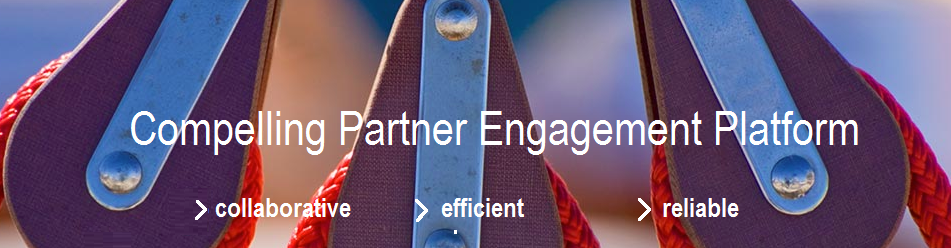

Partner Engagement Platform¶
The Partner Engagement Platform (PEP) significantly simplifies the management of data from different sources. Featuring an onboarding portal, PEP allows seamless integration of various data sources and ensures efficient workflow. This solution is a module of the Contextual Multi-Domain MDM but can also be used and connected separately.
Key Elements¶
- Communicate
- Establish a central platform for direct communication and feedback.
- Standardize
- Standardize upload, validation, and editing processes.
- Cooperate
- Establish cooperation of all participants to create an optimum purchasing experience.
- Consolidate
- Integrate the data from various sources including data pools and content aggregators.
- Upload
- Upload and merge data quickly via a secure access point.
Key Benefits¶
- Manage system profiles and endpoints easily.
- Resolve data conflicts quickly.
- Collaborate with partners effectively.
- Reduce workflow bottlenecks significantly.
Key Features and Modules¶
- Variant Creation
- Automatically create variants of products.
- Golden Records
- Cleanse data to establish Golden Records for maximum data quality.
- Match and Merge Data
- Easily check for duplicates across all data sources.
- Product Inquiry and Request
- Automate onboarding of data from ERP systems, suppliers, and data pools.
- Online Updates
- Allow suppliers to edit data directly online.
- Data Export
- Deliver and map data in Excel format or xml.